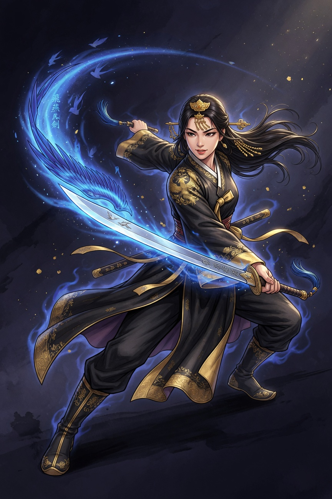
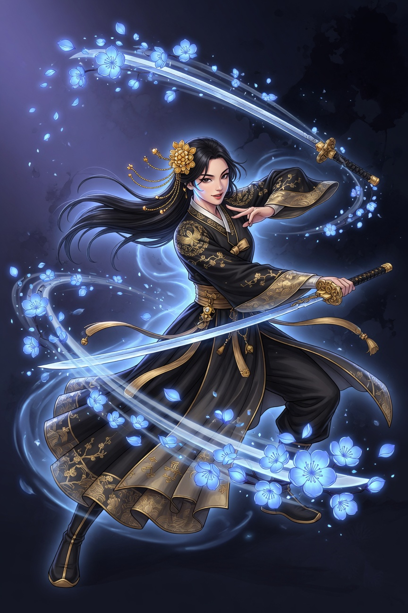
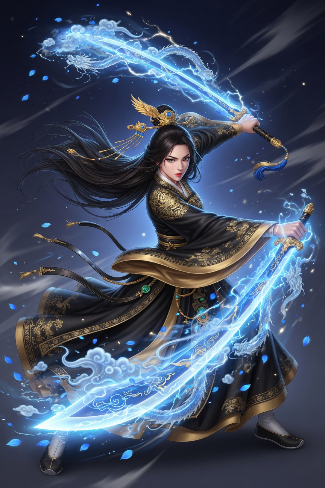
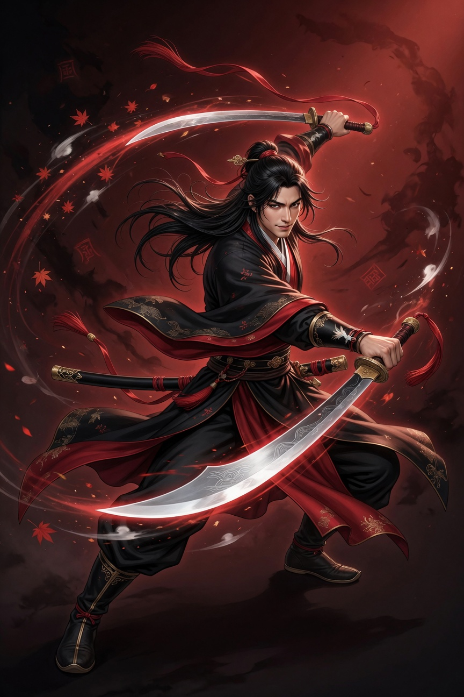
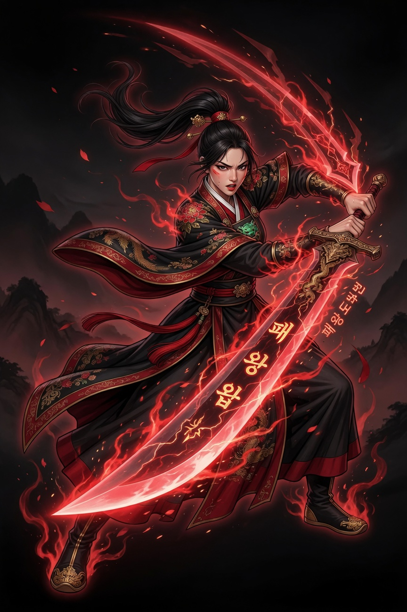
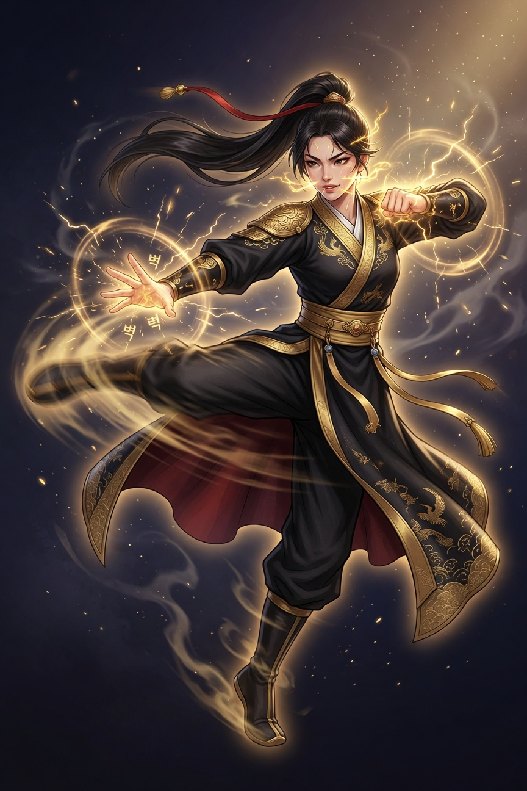
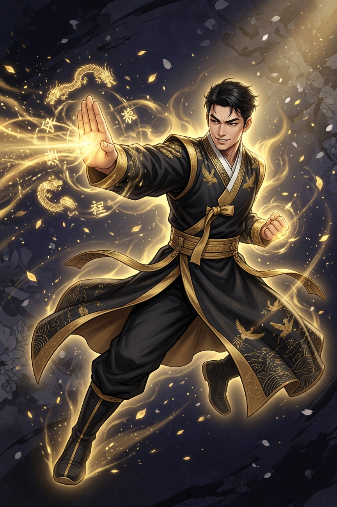
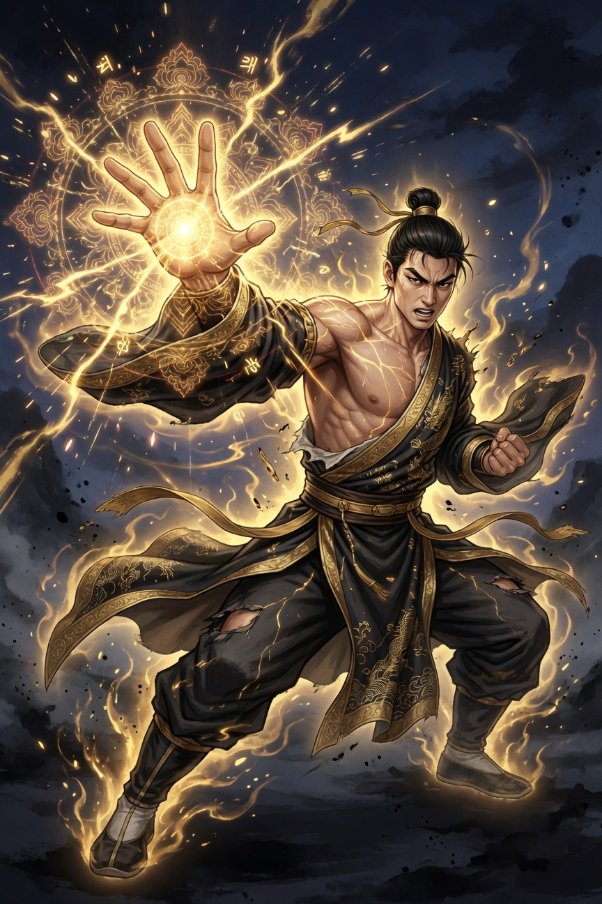
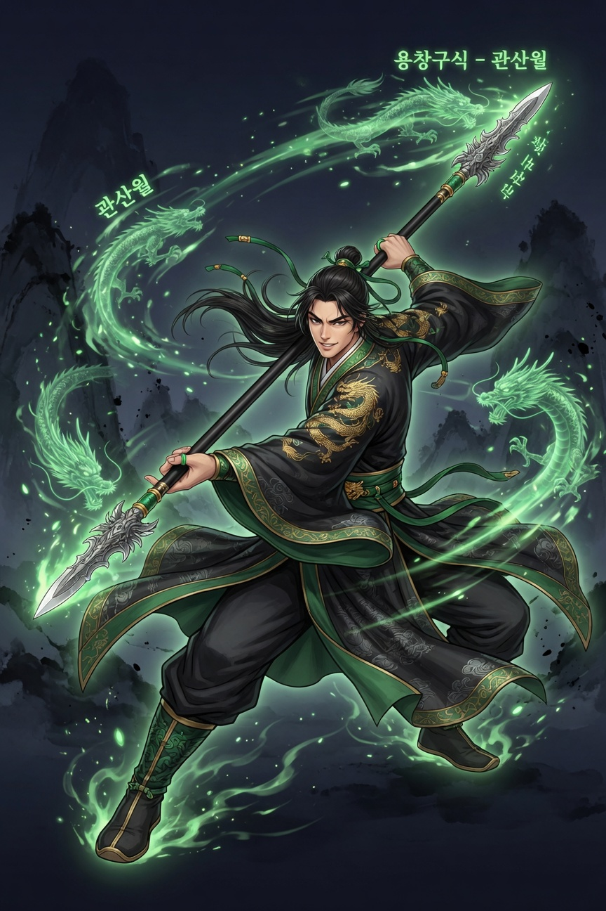
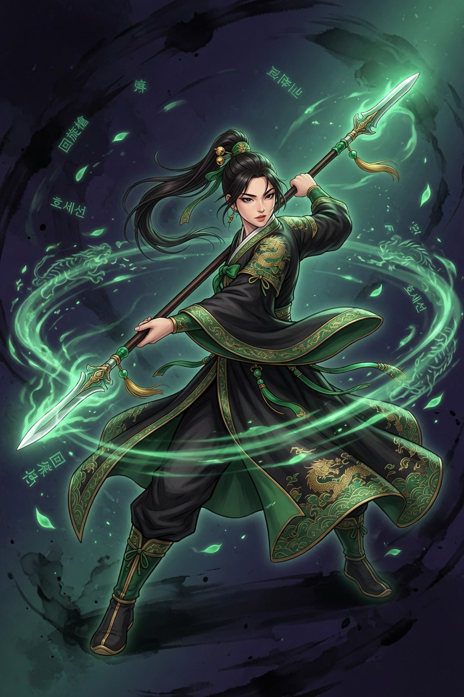

🗡️ 무공 키우기 — 무공 모션 고화질 일러스트
픽셀 아트가 아닌 고화질 디지털 페인팅 스타일의 각 캐릭터 무공(검/도/권/창) 모션
12+ Heroic 스타일 (전체 프로젝트와 일치, 정돈된 영웅적 의상)
업데이트 (2026): motions/ 아래 <hero>_<skill>/f00.jpg ~ f11.jpg 구조로 12프레임 시퀀스 정리. 크로마키 그린 배경 + 자연스러운 유동 모션 + 각 무공 초식 맞춤. 사용 시 그린 키아웃 권장. 상세는 상위 README.md 참고. sword_male 주요 무공 완료, 다른 영웅 배치 진행 중.

여검객 - 삼재검법 (기본)청운검문, 푸른 에너지 베기 모션

여검객 - 매화검법 (중급)화려한 연속 베기, 매화 에너지

여검객 - 창궁무애검법 (궁극)하늘을 가르는 궁극의 대검격

도객 - 발도술 (기본)호풍도문, 단숨에 뽑아 베는 모션

여도객 - 패왕도법 (상급)패왕의 기세로 내려치는 중도

여권사 - 연환퇴 (중급)비룡권문, 연속 발차기 모션

권사 - 태조장권 (기본)빠른 장법 모션

권사 - 여래신장 (궁극)거대한 장력 폭발 모션

창객 - 용창구식 (상급)운령창문, 용의 창식 다단 찌르기

여창객 - 회선창 (중급)창 회전으로 주변 휩쓰는 광역
제작 정보
기존 heroic 캐릭터 포트레이트 (sword_female.jpg 등)와 동일 스타일로 제작.
각 모션은 specs의 무공명 (삼재검법, 매화검법, 패왕도법, 항룡십팔장, 용창구식 등) 과 설명에 기반한 동적 포즈.
클래스별 원소 오라 (검:청, 도:적, 권:금, 창:녹) 유지.
추가 요청: 특정 무공 더 (e.g. "비연검 모션", "혈천장경 모션" 등), 남/여 변형, motion sheet (한 장에 여러 포즈), 또는 스킬 카드용 버전.
Mugong Kiugi Heroic Motion Illustrations — Generated from additional specs + README